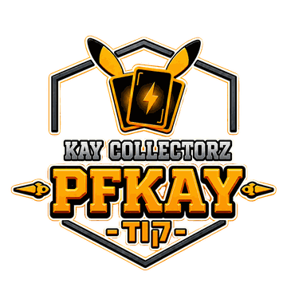
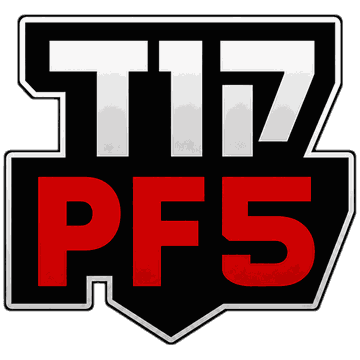
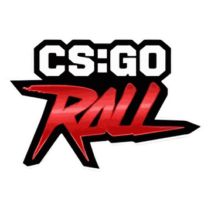

לשידורים ב-YouTube
לשידורים ב-Kick
Watch Live
שרת הדיסקורד
Reddit
Tiktok
Instagram
דיסקורד בשמים
כלבו יהודה
קוד PF17 ל17% הנחה

קאי קולקטורז
קוד PFKAY ל5% הנחה
All-Time Top Gifters
| RANK | USERNAME | SUBS |
|---|---|---|
| טוען נתונים... | ||
Weekly Top Gifters
| RANK | USERNAME | SUBS |
|---|---|---|
| טוען נתונים... | ||

🪙 7,500 CODE PF5 LEADERBOARD
טוען לידרבורד...
Leaderboard Ends In
--
:
--
:
--
:
--
| RANK | USER | WAGERED | PRIZE |
|---|---|---|---|
| טוען נתונים... | |||
Disclaimer: Please gamble responsibly (18+). We assume no responsibility for any financial losses or outcomes incurred on external gambling or promotional platforms linked on this site.